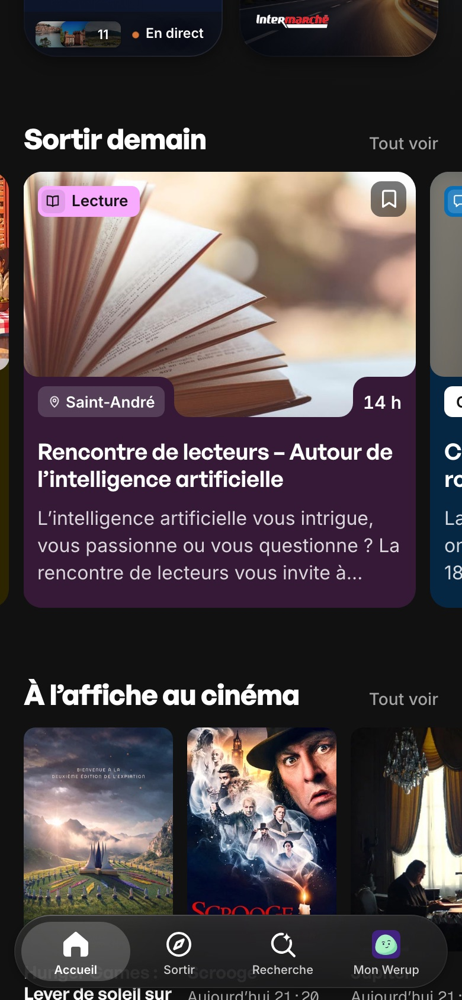
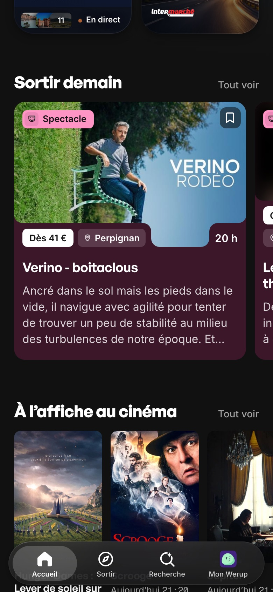

Sortir : le rangement
Captures de werup.app en production, le 18/11 vers 21 h 15.
La nouvelle catégorie Lecture« Rencontre » n’existe plus : Conférence, Lecture, Solidarité, Cérémonie.
Sortir demain, à ElneTitres remis au propre, aucun doublon, cartes égales.